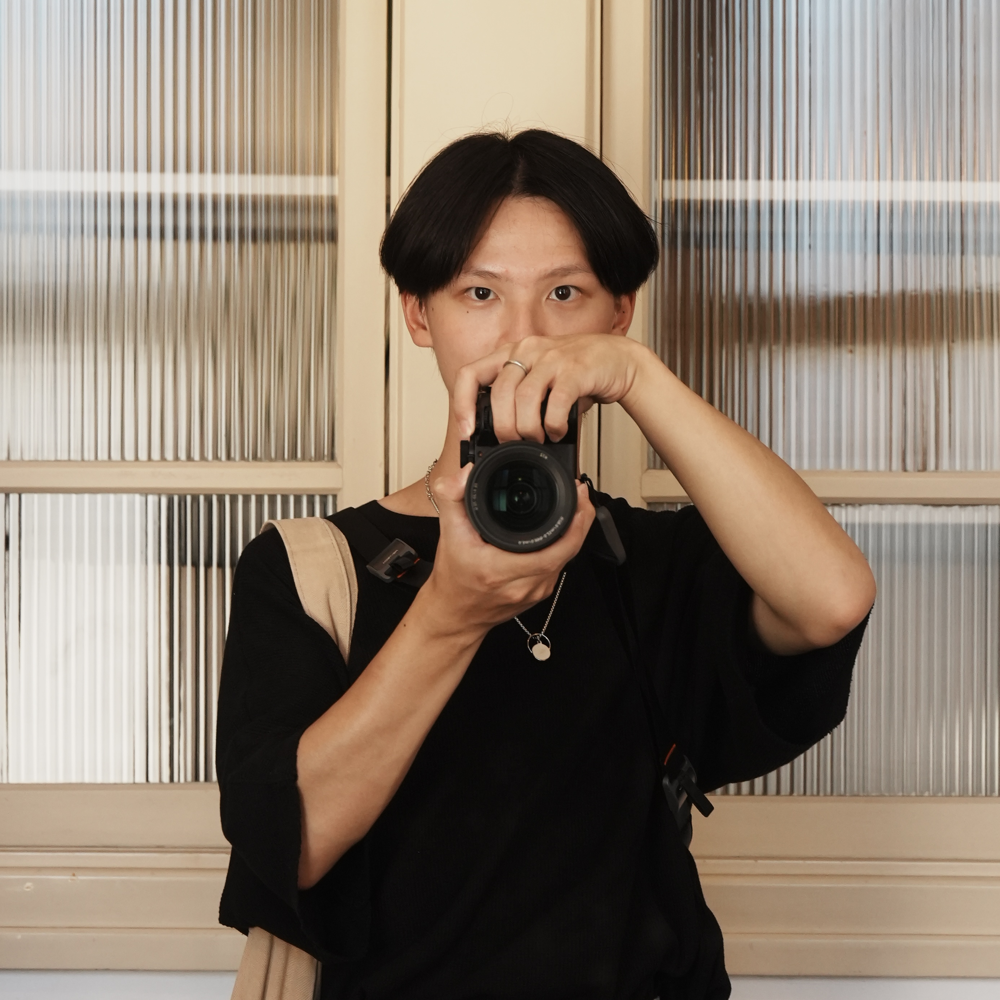

01
拍照給未來的人看
你是否曾經想過，我們是如何得知一百年前，人們穿什麼樣的衣服、過著怎麼樣的物質生活？儘管文字記述可以提供線索，卻沒有一種方式能比影像來得更清晰可見。
影像所凝聚的當下，包含了一個場景的人事時地物，它不僅是這個時代傳播與敘事的工具，把時間軸拉長來看，影像更是一種帶著過去的訊息前往未來的重要檔案。
在AI當道的現在，帶有真實人性的影像顯得格外重要。我想用更長遠的眼光紀錄下屬於台灣的瞬間，讓未來的人看見屬於我們自己的文化記憶。

在臺北城中表町一丁目長大的台灣囡仔，INFJ天秤座，喜歡廟會、老房子和一切老事物。這輩子除了到處旅行按快門和寫文字，好像沒有其他太擅長的事。耳機裡有90%是台灣獨立音樂，談到棒球的話肯定支持統一獅。目前計劃到日本交換一年。
你是否曾經想過，我們是如何得知一百年前，人們穿什麼樣的衣服、過著怎麼樣的物質生活？儘管文字記述可以提供線索，卻沒有一種方式能比影像來得更清晰可見。
影像所凝聚的當下，包含了一個場景的人事時地物，它不僅是這個時代傳播與敘事的工具，把時間軸拉長來看，影像更是一種帶著過去的訊息前往未來的重要檔案。
在AI當道的現在，帶有真實人性的影像顯得格外重要。我想用更長遠的眼光紀錄下屬於台灣的瞬間，讓未來的人看見屬於我們自己的文化記憶。
台灣文化是在長期的遷移、多元文化的輸入下所形成的。也因為我們對自己的認同，在政權迭代之下出現了斷裂，所以台灣人百年來從未停歇腳步，探問自己「我們是誰？」。
文化是一個群人的習慣，是一個地方，乃至一個民族長期積累的知識經驗。雖然台灣文化源自於多文化的輸入，但在種種考驗下，我們也發展出了一套屬於我們自己的風格。在全球化的時代下，文化成為了亮眼的標籤，我們引以為傲的自我認同，讓我們在汪洋中變得顯眼。近期風靡國際的「台灣感性」就是具體的案例。
我期待能藉由影像與文字，結合短影音與多語言的新方式，讓更多人看見屬於我們自己的美好。也期待藉由重拾這些美好，我們都能抬頭挺胸地向世界說出：我們是台灣人。
台灣自古以來便是世界貿易與交通要地，招來了多元的文化在此留下足跡。「台灣」的概念絕不僅限於中華文化，而是與原住民族、日本、荷西以及各式各樣文化交織而成的共同體。台灣人因此善於融會貫通，同時也樂於接納異己，這就是外國人來台時常念念不忘的「人情味」。
影像不只能紀錄台灣文化的特色，更能紀錄下這片土地上人與人、人與文化的互動。我期待外國朋友們能藉由台灣的影像，在台灣文化中找到共鳴，甚或在人情味裡找到屬於自己的一份歸屬。
如此，台灣得以在世界的舞臺被更多人看見。我始終相信，有一天，我們也能用平等的地位向世界介紹，我們是台灣。